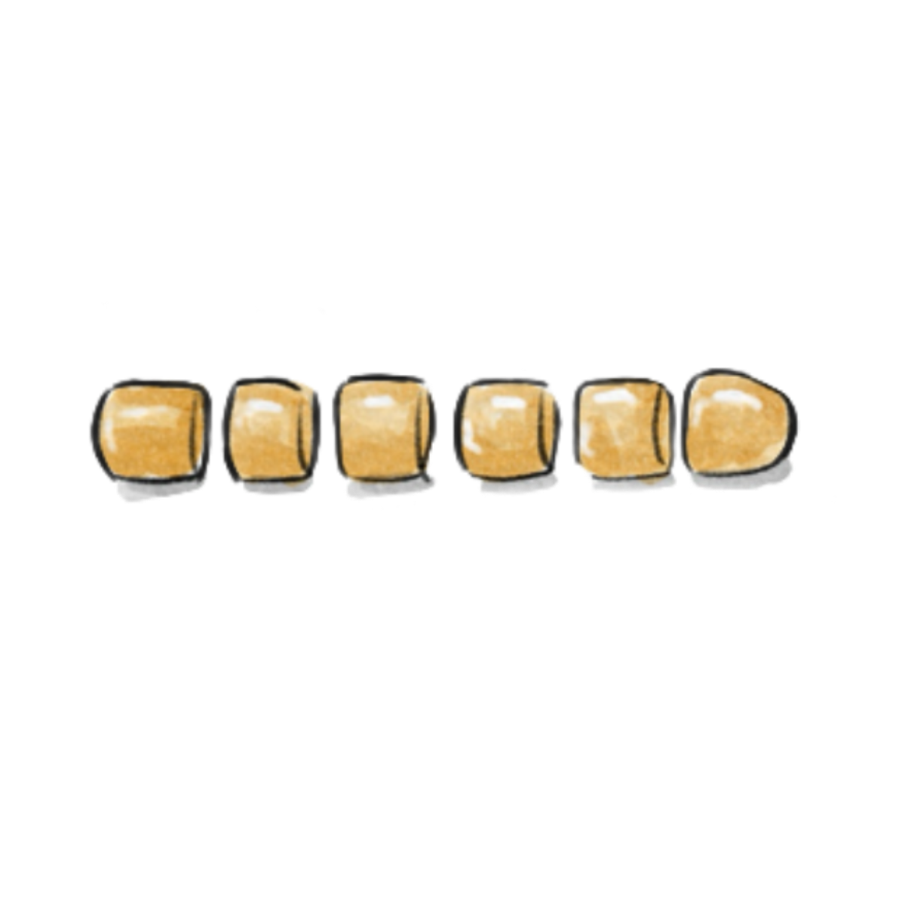

Let's get ready to cook
Step 1
Select a yellow pumpkin, peel it, and slice thinly. Steam until soft, then let it cool. Use a masher or blender to process the pumpkin into a smooth, fine-grained texture.
Step 2
Add 3 grams of yeast and 15 grams of sugar to the prepared, cooled pumpkin puree and mix until well combined.

Step 3
Pour the well-mixed pumpkin puree into 300 grams of flour, add 12 grams of lard, and knead into a smooth dough. Cover and let it rest for about 40 minutes until the dough has expanded and become fluffy.
Step 4
Punch down the rested dough to release air, roll it into a long strip, and cut into evenly-sized pieces. You can use a digital scale to measure for accuracy.

Step 5
Roll each piece into a round shape and place in a steamer. Cover and let them proof again for 10 minutes. Once the water is boiling, steam for 12 minutes, then turn off the heat and let sit covered for about 3 minutes before serving.